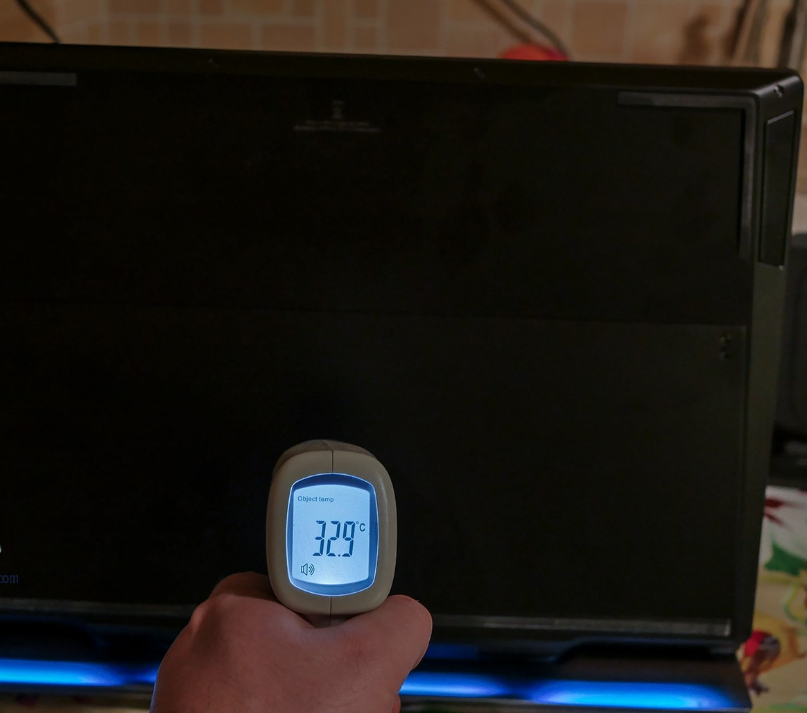
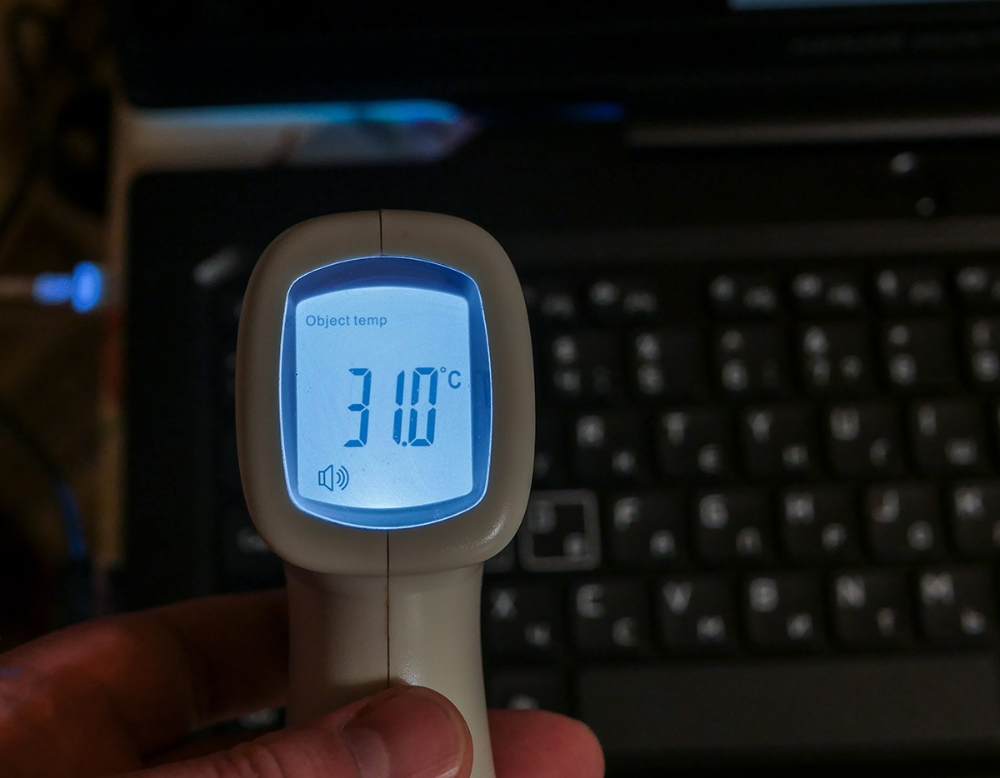

.png)
Мощность процессора ограничена 25 Вт. При сниженном энергопотреблении Honor Hunter V700 может с легкостью справиться практически с любой задачей, за исключением требовательных игр.
Мощность процессора и видеокарты поддерживаются на уровне 45 Вт и 80 Вт соответственно, благодаря чему достигается баланс производительности и тишины. Уровень шума может быть ограничен до всего 43 дБ (данные получены в лабораториях HONOR)
Мощность повышается до максимального значения 100 Вт, помогая достичь полных показателей производительности системы и графики, и даже с более быстрой работой вентиляторов уровень шума остается на уровне 49 дБ (данные Honor).
Разработчики Honor утверждали, что охлаждение сделали таким образом, чтобы во время игры было комфортно работать с клавиатурой. Например, левая зона с кнопками WASD нагревается до 25-30 градусов, центральная часть клавиатуры – до 37 градусов, справа – до 28 градусов. Экран почти всегда не более 25 градусов.
Температура возле «выхлопов» справа и слева – не более 35 градусов. Над ней температура была максимально в районе 33 градусов – внизу по центру. В радиусе тачпада – не более 28 градусов.
Как и любой Windows-ноутбук, Honor Hunter V700 периодически включает кулеры «на ровном месте». Во время нагрузки шум приятный, похожий на шелест листьев. Никакого завывания или гула, вполне комфортный звук. А если вы играете в наушниках, то ничего не будете слышать.
Сильный ли выдув горячего воздуха? Для такой системы – нет. Более того, поверхность по периметру ноутбука почти не нагревается, остается еле теплой.
«Система охлаждения с функцией самоочистки, при активации которой частички пыли выдуваются через специальные каналы для отвода пыли, что помогает продлить срок службы теплоотводов, повышая стабильность и эффективность системы охлаждения, и продлевая срок службы ноутбука».
«Наши инженеры представили теплоотводы Obsidian, которые передают определенное количество выработанного тепла системы Wind Valley, позволяя прохладному воздуху из отверстий понизить температуру. Для повышения производительности системы охлаждения площадь теплоотводов составляет 28 542 мм2. Блестящая обсидиановая поверхность в сочетании со световыми эффектами ноутбука создают прекрасную атмосферу для игр.
С 240 ультратонкими панелями площадь поверхности теплоотвода возрастает до 75 134 мм2. Панели значительно тоньше (0,1 мм каждая), чем применяемые обычно в ноутбуках (толщиной 0,2 мм), благодаря чему в одинаковое пространство можно вместить больше панелей, сокращая таким образом сопротивление воздуха и повышая возможности управления температурой.
Панели в сочетании с теплоотводами Obsidian предоставляют поверхность площадью до 103 676 мм2 для охлаждения, обеспечивая постоянную высокую производительность».
Динамики и звуковые эффекты Nahimic Громкость высокая, звук чистый, басистый. Но лучше все-таки подключить к ноутбуку хорошую гарнитуру. Причем, у V700 приличная мощность: уже на 50% громкости гарнитура JBL Quantum 200 начинает кричать. Звук в наушниках классный, особенно в игрушках ощущаешь объем.
Обзор Honor Hunter V700: игровой ноутбук 18+ Время работы Здесь почти не о чем писать, так как устройство без питания даже в режиме печатной машинки работает не более полутора часов. Но такие устройства и не предназначены для автономной работы.
Впечатления Мне кажется, что у Honor получился очень крутой продукт, который и выглядит круто, и внутри имеет приличные компоненты!
Высокая стоимость
Не самая удобная клавиатура. Как минимум для набора текста надо привыкать. Низкое разрешение экрана. Понятно, для чего, но все равно хотелось бы более четкую картинку Небольшой объем накопителя. По сути, я уставил BF5 и Assassins – осталось менее 150 ГБ. Это без программ, без данных пользователя.
Компактность Производительность в играх Скорость памяти ОЗУ и накопителя Возможность установки дополнительного объема ОЗУ и накопителя Частота обновления экрана в 144 Гц Если бы не цена в 150 000 рублей, я однозначно рекомендовал бы Honor Hunter V700 к покупке. Однако сейчас можно купить, например, HP Omen 15-dh1026ur за 125 000 рублей с Intel Core i7 10750H, 16 ГБ ОЗУ, двумя накопителями 1 ТБ + 512 ГБ (HDD+SSD), 15.6 дюйма экран со 144 Гц, видеокарта NVIDIA GeForce RTX 2060 6 ГБ.
Или MSI GP75 10SFK-475XRU за 140 000 рублей с Intel Core i7 10750H, 16 ГБ ОЗУ, двумя накопителями 1 ТБ + 256 ГБ (HDD+SSD), 17.3 дюйма экран со 144 Гц, видеокарта NVIDIA GeForce RTX 2070 8 ГБ.
В любом случае у Honor вышел замечательный аппарат, на который стоит обратить внимание. Тут, по крайней мере, не надо копаться в моделях с тоннами индексов – есть только один Honor Hunter V700 с крутыми параметрами.